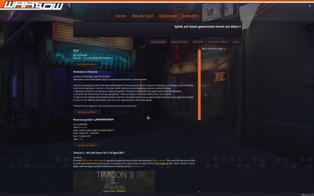

Warsow
Dieser Artikel wurde für die folgenden Ubuntu-Versionen getestet:
Ubuntu 16.04 Xenial Xerus
Zum Verständnis dieses Artikels sind folgende Seiten hilfreich:
Warsow  (auch: War§ow) ist ein Ego-Shooter basierend auf einer erweiterten Quake 2 Engine (Qfusion), die in einem comicartigen Stil gehalten ist. Das Spielprinzip ist vor allem an die Quake 3 Modifikation CPMA (Challenge Pro Mode Arena) angelehnt, wodurch Warsow ein sehr schneller Shooter ist, der viel Wert auf gutes Movement legt. Die Macher haben dabei vor allem Elemente aus der Quake- und Unreal Tournament Reihe übernommen und kombiniert.
(auch: War§ow) ist ein Ego-Shooter basierend auf einer erweiterten Quake 2 Engine (Qfusion), die in einem comicartigen Stil gehalten ist. Das Spielprinzip ist vor allem an die Quake 3 Modifikation CPMA (Challenge Pro Mode Arena) angelehnt, wodurch Warsow ein sehr schneller Shooter ist, der viel Wert auf gutes Movement legt. Die Macher haben dabei vor allem Elemente aus der Quake- und Unreal Tournament Reihe übernommen und kombiniert.
Seit Version 2.01 wird das Spiel nicht mehr aktiv weiterentwickelt, da der Hauptentwickler  das Projekt verlassen hat.
das Projekt verlassen hat.
|  | |
| Menü | Spielszene |
Installation¶
GOG.com¶
Die Version von gog.com kann zur eigenen Bibliothek hinzugefügt und von dieser heruntergeladen werden. Anschließend in das Downloadverzeichnis wechseln, das Skript gog_warsow_2.1.0.3.sh mit den passenden Ausführrechten versehen [10] und dieses im Anschluss ausführen [2]:
./gog_warsow_2.1.0.3.sh
Die Installationsroutine startet und installiert das Spiel im gewünschten Verzeichnis.
Playdeb¶
Der einfachste Weg ist es, wenn man die Paketquelle von PlayDeb: ins System einbindet [7] und die Engine anschließend installiert [9]:
warsow (PlayDeb)
 mit apturl
mit apturl
Paketliste zum Kopieren:
sudo apt-get install warsow
sudo aptitude install warsow
Hinweis!
Fremdpakete können das System gefährden.
Unter "Spiele → Warsow"kann der Titel aufgerufen werden.
Projektseite¶
Zunächst muss das Paket
libcurl3 (main)
mit apturl
Paketliste zum Kopieren:
sudo apt-get install libcurl3
sudo aptitude install libcurl3
installiert [8] werden.
Die aktuelle Version des Spiels von der Projektseite  herunterladen. Das Archiv an einem beliebigen Ort entpackten [3] (z.B. ~/Spiele/Warsow). Die im Archiv enthaltenen Binär-Dateien müssen nun ausführbar gemacht werden [2]:
herunterladen. Das Archiv an einem beliebigen Ort entpackten [3] (z.B. ~/Spiele/Warsow). Die im Archiv enthaltenen Binär-Dateien müssen nun ausführbar gemacht werden [2]:
chmod +x ~/Spiele/Warsow/warsow*
Dabei muss der Pfad zum Spiel angepasst und anschließend die Datei warsow im Spiel-Verzeichnis ausgeführt werden [4]. Man kann sich hierfür auch einen Menüeintrag [6] und Verknüpfungen anlegen. Icons dafür gibt es hier und hier .
Um das Spiel noch etwas komfortabler starten zu können, empfiehlt es sich, ein Startskript zu erstellen. Dazu erstellt man mit einem Editor [1] die Datei warsow mit folgendem Inhalt:
1 2 3 | #!/bin/sh cd /home/NAME/Spiele/Warsow ./warsow $* |
Anschließend die Ausführrechte setzen [2]:
chmod +x warsow
Bei einer Root-Installation kann das Skript nach /usr/local/bin, bei einer Benutzer-Installation in den Ordner bin verschoben werden. Über den Befehl warsow kann das Spiel gestartet werden [4].
Das Spiel¶
Gegner finden¶
Interner Serverbrowser¶
Um nach Servern zu suchen, einfach im Hauptmenü des Spiels auf "Neus Spiel" gehen. Verfügbare Server werden angezeigt.
Spielt man bevorzugt auf einen bestimmten Server, kann man ihn einer Favoriten-Liste hinzufügen. Dazu geht man mit dem Mauszeiger über den entsprechenden Server und drückt die Taste F . Wenn man nun oben rechts im Serverbrowser bei dem Punkt "search" auf "favorites" umschaltet, werden nur noch die ausgewählten Server durchsucht. Möchte man den Server wieder aus der Liste entfernen, fährt man mit der Maus über den entsprechenden Eintrag und drückt die Taste R .
Direkt zu einer IP-Adresse verbinden lassen¶
Möchte man mit ein paar Freunden auf einem eignen Server spielen, muss der Ersteller des Servers darauf achten, dass die Option Public auf off steht. Die restlichen Mitspieler müssen im Spiel die Konsole mit ^ starten und sich mit dem Befehl (ohne <>)
connect <IP-Adresse des Erstellers>
zu dem Server verbinden.
Modifikationen¶
Karten¶
Karten können von der offiziellen Seite heruntergeladen werden. Dort steht unter anderem das Community map pack zur Verfügung. Das Archiv wird entpackt [3] und die Dateien in die passenden Ordner kopiert:
| Struktur | |
| Ordner | Beschreibung |
| basewsw | Dieser Ordner beinhaltet die Karten (.pk3-Datei) |
| previews | Levelvorschau als .jpg-Datei. |
Erste Schritte im Spiel¶
Wenn man dann auf einen Server gekommen ist, ist man zunächst im Zuschauer-Modus, man spielt noch nicht mit, sondern kann das Geschehen nur beobachten. Jedes Warsow-Spiel beginnt zunächst mit einer „Aufwärm-Phase“, der man mit F3 beitreten kann. Alle Spieler starten hier mit vollem Waffenarsenal und haben volle Munition. Mit einem Druck auf F4 gilt man als bereit für den Beginn des Spiels.
Munition¶
Es gibt bei Warsow zwei verschiedene Munitionsarten (und dementsprechend im HUD auch zwei Munitionsanzeigen) für jede Waffe, jeweils eine starke und eine schwache Munitionsart. Hat man eine Waffe frisch aufgesammelt, ist sie standardmäßig mit der normalen, schwachen Munition ausgestattet. Die starke Munition befindet sich nur in den Munitionskisten, die im Level verstreut sind und hat je nach Waffe einen höheren Schaden, eine schnellere Schussrate oder einen größeren Flächenschaden. Man kann zwischen den Munitionsarten nicht hin- und herwechseln. Die starke Munition wird, wenn sie aufgesammelt wurde, automatisch so lange benutzt, bis sie leer ist.
Movement¶
Extrem wichtig in Warsow ist das sog. Movement, also die Art, sich durch die Levels zu bewegen. Mit etwas Übung kann man eine sehr hohe Geschwindigkeit erreichen. Einen ausführliche Beschreibung gibt es hier . Die wichtigsten Eigenheiten sollen hier aber noch kurz vorgestellt werden:
| Movement | |
| Typ | Beschreibung |
| Bunny-Hopping | Anstatt normal durch die Levels zu laufen, sollte man so viel es geht springen. Warsow bietet hier zwei Arten von Sprüngen: Einmal einen normalen mit der Leertaste und eine Art "Hechtsprung", den sog. Dash, mit der rechten Maustaste. Um in Warsow richtig schnell zu werden, beginnt man das Bunny-Hopping mit einem Dash und macht dann nur noch mit dem normalen Sprung weiter. Genaueres ist hier nachzulesen. |
| Wall-Jumps | Mit dem Dash kann man sich in der Luft von Wänden abstützen, wodurch man an ansonsten nicht erreichbare Gebiete gelangt. Bei schrägen, glatten Flächen gewinnt man durch einen Dash etwas Auftrieb. Solche Flächen finden sich bei den meisten Treppen jeweils an den äußeren Rändern. Wenn man mit dem Raketen-Werfer auf den Boden unter sich schießt und springt (Rocket-Jumps), verliert man zwar einige Lebenspunkte aber kann durch den zusätzlichen Schub sehr hoch und weit kommen. Bei Warsow reicht es, einfach beide Maustasten gleichzeitig zu drücken. |
Spielmodi¶
Neben den üblichen Spielmodi wie Deathmatch (DM), Team-Deathmatch (TDM) und Capture the Flag (CTF) gibt es in Warsow noch vier weniger bekannte Modi:
| Spielmodi | |
| Modus | Beschreibung |
| Instagib | Jeder Spieler startet mit dem Elektrobolt und ist mit einem einzigen Treffer tot. Es gibt keine zusätzlichen Gegenstände oder andere Waffen. Es kann in allen Varianten gespielt werden, besonders beliebt ist es in Kombination mit Capture the Flag (iCTF), Team-Deathmatch (iTDM) oder Clan Arena (iCA). |
| Race | Wie der Name schon impliziert, gewinnt der Spieler, der als erstes am Ziel ist. Um die Levels zu meistern, ist ein gutes bis sehr gutes Movement erforderlich. |
| Duel | Eine spezielle Form des 1-on-1-Deathmatches, bei der es keine sog. Power-Up-Items gibt, die den Schaden oder die eigene Robustheit erhöhen. |
| Clan Arena (kurz CA) | Jeder Spieler startet mit allen Waffen und jeweils voller (schwacher) Munition. Zusätzliche Gegenstände wie starke Munition und Heilung gibt es nicht und der sog. "Selfdamge", also der Schaden, den man sich selbst zufügt (z. B. durch den Raketenwerfer), ist deaktiviert. Vor Beginn des Spiels kann man zwischen drei Klassen wählen: Grunt: Startet mit starker Munition für Raketenwerfer und der Riotgun - Camper: Besitzt starke Munition für den Elektrobolt und Granatenwerfer - Spammer: Starke Munition für die Plasma- und Laserwaffe. Das Spiel läuft rundenweise. Wird ein Spieler getötet, muss er für den Rest der Runde zuschauen. Sind alle Spieler eines Teams tot, ist die Runde vorbei und beginnt von vorn. Am Ende hat das Team gewonnen, das die meisten Runden für sich entscheiden konnte. |
Demos¶
Demos sind Aufzeichnungen eines Spiels aus Sicht des Spielers, der die Aufnahme gemacht hat. Wenn die Demo vom Server aufgenommen wurde, kann man das Spiel aus der Sicht aller beteiligten Spieler betrachten. Sie können zum einen recht unterhaltsam sein und zum anderen hat man hier eine Möglichkeit, Tricks und Taktiken abzuschauen.
Demos abspielen¶
Um die Demo abzuspielen, muss man sie nach .warsow/basewsw/demos im Homeverzeichnis kopieren. Anschließend kann sie im Hauptmenü des Spiels unter "Demos" gestartet werden.
Demos aufzeichnen¶
Um Demos aufzuzeichnen, muss man während des Spiels die spielinterne Konsole mit der Taste ^ öffnen und mit dem Befehl
record Dateiname
die Aufzeichnung starten und zum Schluss
stop
eingeben um sie wieder zu beenden. Die Demo befindet sich anschließend in .warsow/basewsw/demos im Homeverzeichnis.
Um jedes Spiel automatisch aufzuzeichnen, muss man im Hauptmenü unter "Setup -> Player Setup" den Punkt "autoaction" auf "demo" schalten.
Tastenkürzel¶
| Tastenkürzel | |
| Taste(n) | Funktion |
 | Charakter steuern |
| Sprung | |
 | Waffe abfeuern |
 (Mausrad) (Mausrad) | Waffe wechseln |
| F12 | Bildschirmfoto erstellen |

Infobox¶
| Warsow | |
| Genre: | Multiplayer Ego-Shooter |
| Sprache: | |
| Veröffentlichung: | 2006-2012 |
| Entwickler: | Warsow-Team |
| Systemvoraussetzungen: | Prozessor 2 GHz - 512MB RAM - 3D Grafikkarte mit 512MB VRAM |
| Medien: | Download |
| Strichcode / EAN / GTIN: | - |
| Läuft mit: | nativ |
- Erstellt mit Inyoka
-
 2004 – 2017 ubuntuusers.de • Einige Rechte vorbehalten
2004 – 2017 ubuntuusers.de • Einige Rechte vorbehalten
Lizenz • Kontakt • Datenschutz • Impressum • Serverstatus -
Serverhousing gespendet von